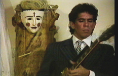
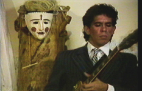

|
STRIKE THE
BALANCE
|
Parte de las Tragedias Negras
 

Categoría: Video-arte experimental
Fecha: Junio, 1988
Director: Richar Lair (Munich, Alemania)
Producción: Richar Lair y Emilio Mendoza
Música: Berima and the O'Gations, partes de Etnocidio de Emilio Mendoza, ejecutada por la ODILA;
Duración: 16' 52"
Locaciones: Venezuela
Danza: Carlos Orta y Ballet Coreoarte, 1987, Caracas
YouTube: https://youtu.be/THDjeTksUGg
- Video Fest '89,
MedienOperative, Berlin, Alemania, 1989.
- Europäisches Film und Fernseher Jahr, Gasteig, Blackbox Saal, Munich, Alemania, 07/1988.
STRIKE THE BALANCE
es el último de los tres videos que fueron realizados en
conjunción creativa del artista
audiovisual alemán Benno Richard Mauler
Lair con el compositor
Emilio Mendoza en los ochenta, en
Caracas, Venezuela.
(Código ZKM: 2008000365_0000_lair_richard_strike-the-balance_venezuela_1988_umatic.mov)
(Código ZKM: 2008000365_0000_lair_richard_strike-the-balance_venezuela_1988_umatic.mov)